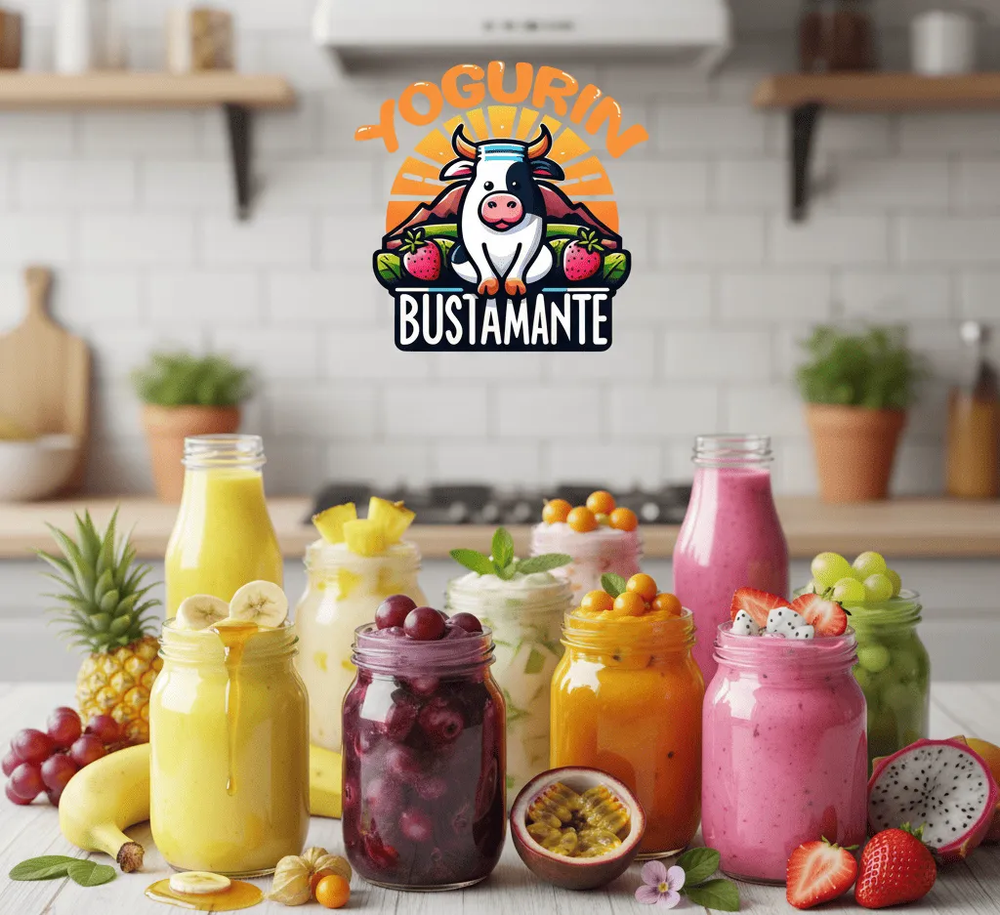
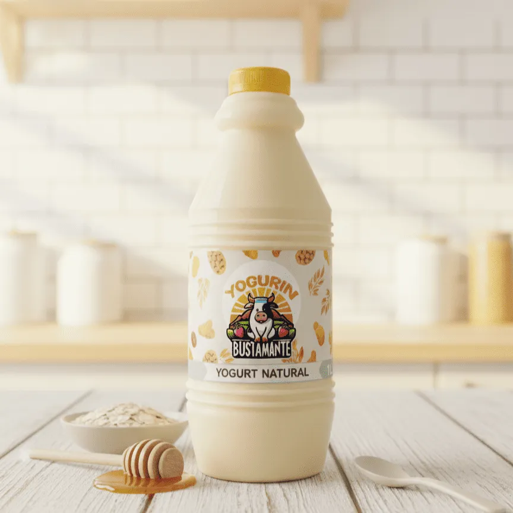
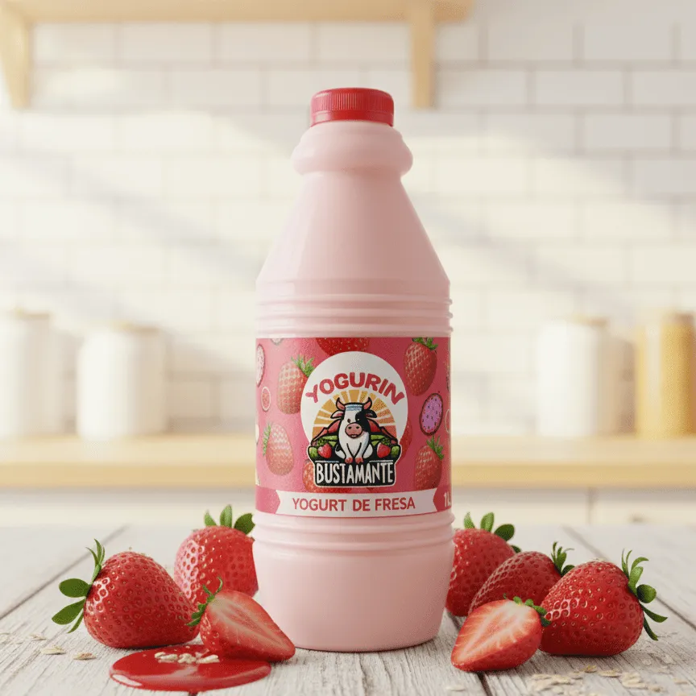
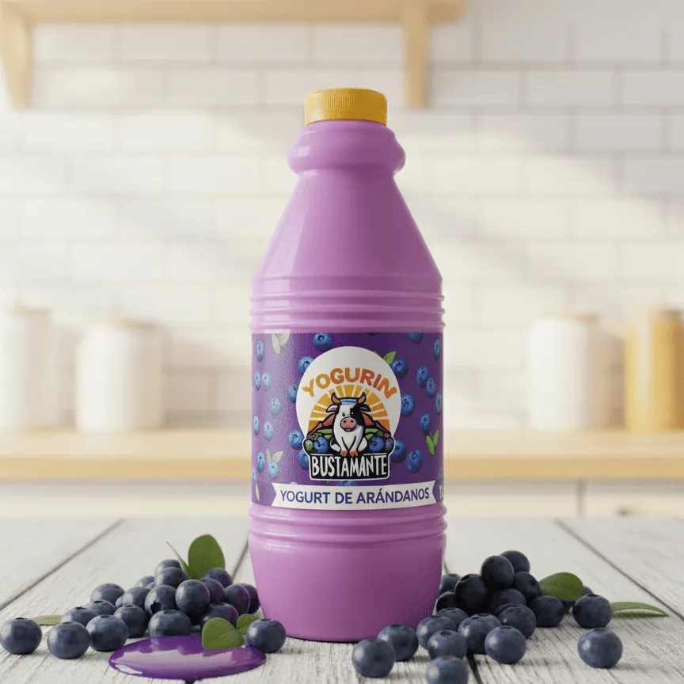
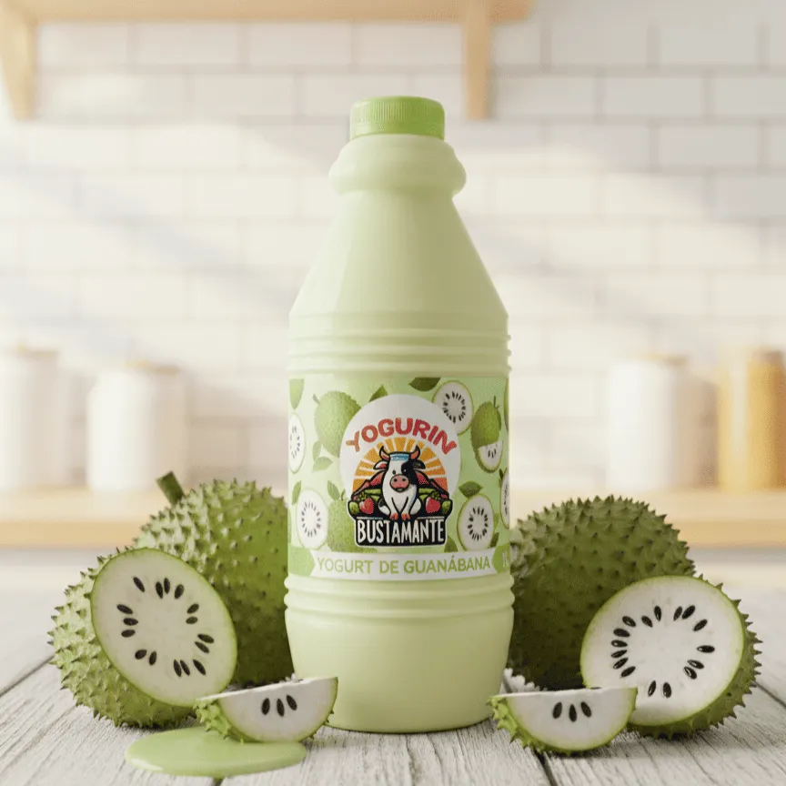
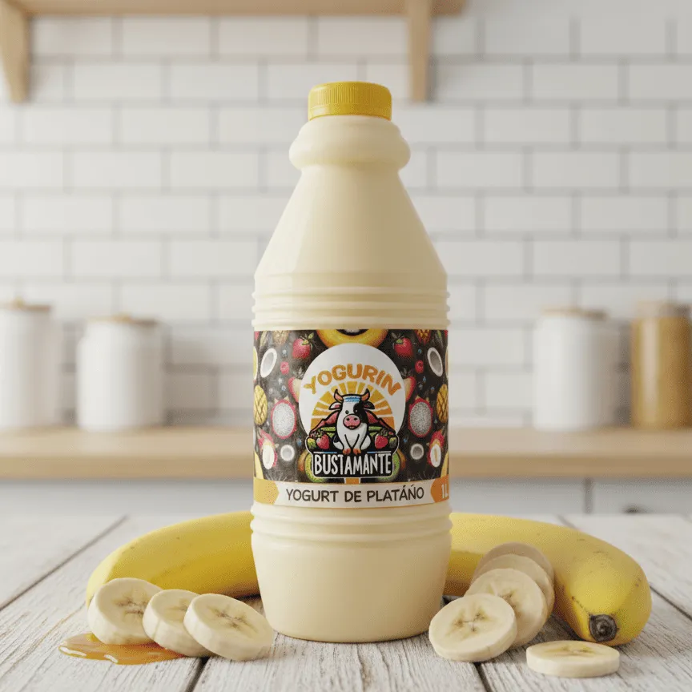
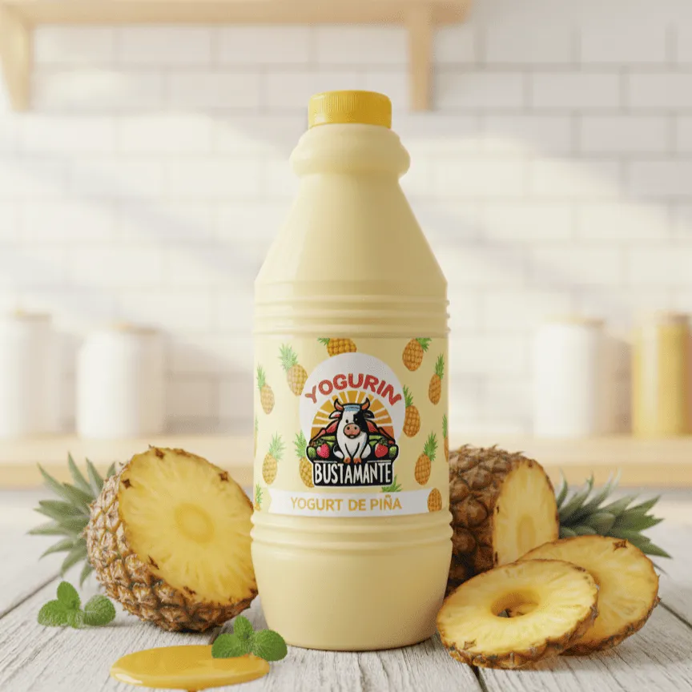
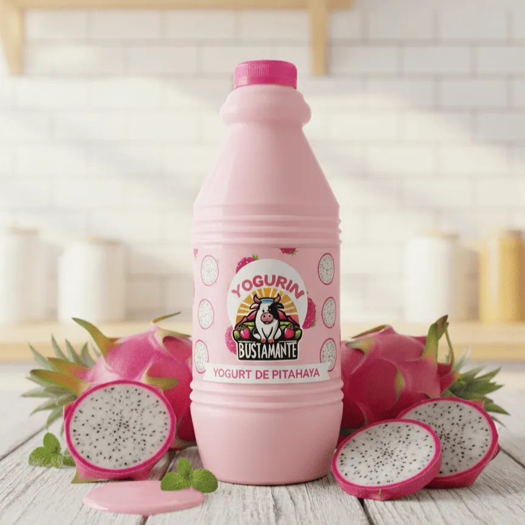
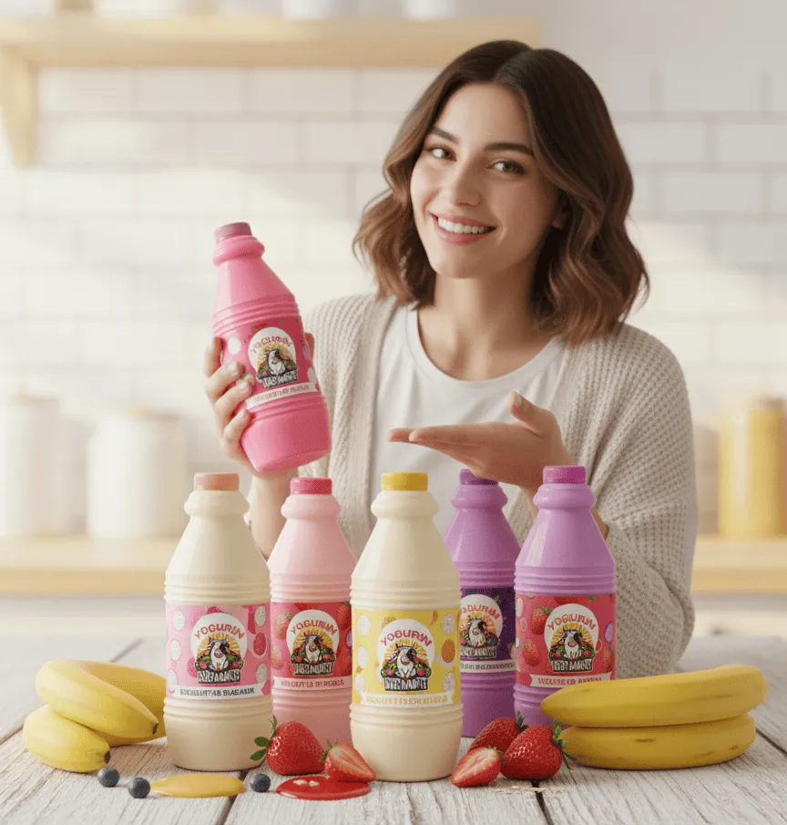

Sin conservantes artificiales
Endulzado naturalmente
Nutrición completa
Sayán, Huacho, Huaura, Andahuasi, Humaya y Churín
Yogures artesanales elaborados con los mejores ingredientes

Clásico y cremoso, perfecto para cualquier momento.

Delicioso sabor a fresas frescas naturales.

Antioxidantes naturales y sabor excepcional.

Sabor único a guanábana peruana. Natural y sin conservantes.

Con plátano peruano. Dulce y natural, sin azúcar añadida.

Fresco y tropical. Con pulpa de piña natural, sin conservantes.

Color vibrante y sabor único. Con pitahaya real, sin colorantes.
Para bodegas, restaurantes y negocios. Precios especiales por docena.
Solicitar cotización →Sayán, Huacho, Huaura, Andahuasi, Humaya y Churín. Pedido con 1 día de anticipación.
Ver zonas →Cumpleaños, matrimonios, reuniones y más. Coordinamos según tu fecha.
Cotizar evento →Yogurt con registro sanitario verificado por la municipalidad y capacitación en producción láctea.
Conocer más →
Yogurin Bustamantees una familia peruana que hace yogurt con amor. Queremos llevar salud y buen sabor a tu hogar.
Usamos leche fresca y frutas naturales. Sin conservantes ni colorantes. Todo hecho a mano, con cuidado.
Natural
Años de experiencia
"El mejor yogurt que he probado. Natural, cremoso y delicioso. Los envíos programados a Huacho son muy puntuales. Mi familia lo adora."
"Excelente calidad y precio. Los envíos programados a Sayán son puntuales. La atención por WhatsApp es rápida y muy amable. 100% recomendado."
"Mis hijos están felices. El yogurt de fresa es su favorito. La entrega a Andahuasi siempre es perfecta. Gracias por un producto tan saludable."
Estamos listos para atenderte
+51 944 296 912
Lun - Sáb: 8am - 8pm
Sayán, Huaura, Lima
Envíos en toda la provincia de Huaura
Enviamos yogurt artesanal los viernes a toda la provincia de Huaura
Delivery gratis desde 3 yogures
Ver info →Delivery los viernes, pedido mínimo 1 docena
Ver info →Delivery los viernes, pedido mínimo 1 docena
Ver info →Delivery los viernes, pedido mínimo 1 docena
Ver info →Vía agencia de autos Sayán-Huacho
Ver info →Vía Crucero Express
Ver info →Haz tu pedido hoy. Tenemos precios por cantidad y entrega semanal.
Pedir AhoraCasa Blanca Mz K Lote 06C, Sayán, Huaura, Lima